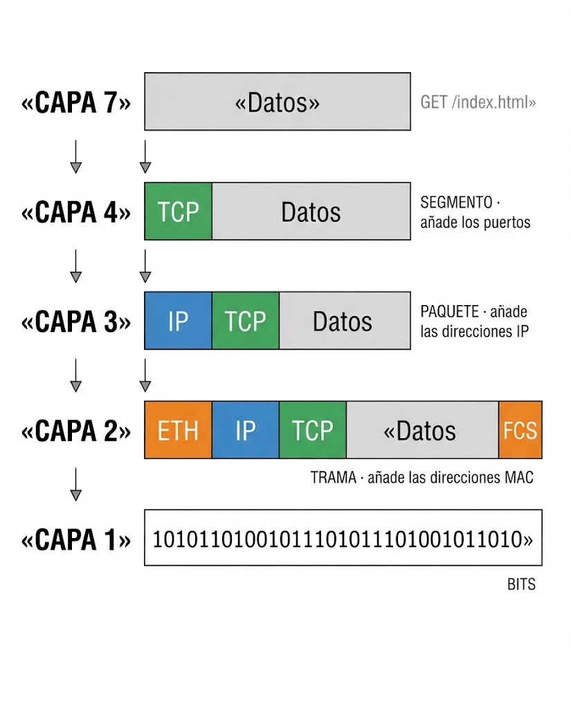
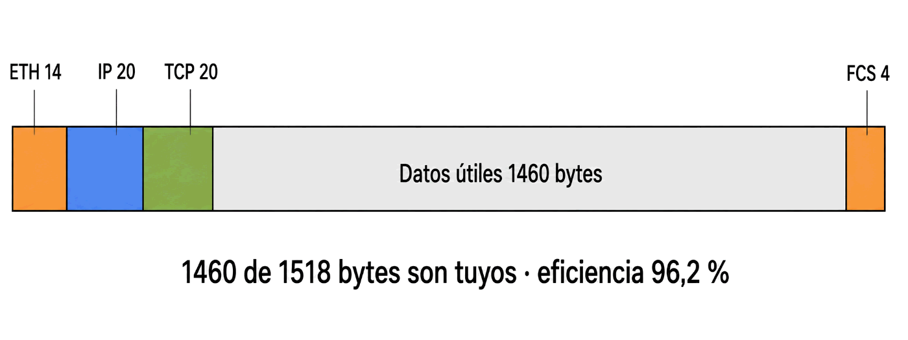

Contenido del día
1. Capa 4 — Transporte
La capa 3 sabe llevar un paquete de un equipo a otro. Pero deja dos problemas sin resolver:
- Al llegar al equipo, ¿a qué programa se lo entrego? Puede haber cincuenta esperando.
- ¿Y si el fichero es más grande de lo que cabe en un paquete? ¿Y si se pierde uno por el camino?
De eso se ocupa la capa de transporte.
| Capa de transporte | |
|---|---|
| Unidad de datos | Segmento (TCP) o datagrama (UDP) |
| Direccionamiento | Puerto, 16 bits |
| Alcance | Extremo a extremo, de programa a programa |
| De qué se ocupa | Entregar al proceso correcto, trocear y, con TCP, garantizar la entrega |
| Protocolos | TCP y UDP |
La capa 3 lleva el paquete hasta la puerta del edificio. La capa 4 sabe en qué piso vive cada programa.
TCP y UDP: dos formas de entregar
| TCP | UDP | |
|---|---|---|
| Conexión previa | Sí, hay que establecerla | No: se envía y ya está |
| Garantiza la entrega | Sí: reenvía lo que se pierde | No |
| Mantiene el orden | Sí | No |
| Tamaño de cabecera | 20 bytes | 8 bytes |
| Cuándo se usa | Cuando no se puede perder ni un byte: web, correo, ficheros | Cuando el dato caduca y prima la velocidad: voz, vídeo, DNS, juegos |
Un fichero de 10 MB no cabe en un paquete. La capa 4 lo trocea en segmentos numerados, y en el destino la misma capa los vuelve a juntar en orden.
Esa numeración es también lo que permite a TCP detectar que falta un trozo y pedirlo otra vez. La capa 3 no podría hacerlo: ella trata cada paquete como si fuera el único del mundo.
2. Capas 5, 6 y 7
Las tres de arriba se ocupan del significado de los datos, no de su transporte. En la práctica cuesta separarlas, y el miércoles verás que TCP/IP directamente las fusiona en una sola.
| Capa | De qué se ocupa | Ejemplos |
|---|---|---|
| 5 · Sesión | Abrir, mantener y cerrar el diálogo entre dos aplicaciones. Quién habla y cuándo, y reanudar si se corta | Sesiones de inicio de sesión, RPC, NetBIOS |
| 6 · Presentación | Formato de los datos: codificación de caracteres, compresión y cifrado | UTF-8, JPEG, TLS |
| 7 · Aplicación | El servicio que la persona quiere usar | HTTP, DNS, SMTP, FTP, SSH |
La capa 7 la forman los protocolos —HTTP, DNS, SMTP—, no los programas que los emplean. Word tampoco es capa 7; SMTP sí.
Cuando entras en una dirección que empieza por https, el candado lo pone
TLS, que es capa 6: se ocupa de cómo se representan los datos, y
cifrarlos es una forma de representarlos.
Por eso HTTPS no es un protocolo distinto de HTTP: es HTTP (capa 7) viajando sobre TLS (capa 6). Y por eso el cambio no afectó ni a TCP ni a IP.
3. La encapsulación: bajar la pila
Aquí está el mecanismo que hace funcionar todo el modelo. Cuando envías algo, el dato baja por las capas, y cada una le añade su propia cabecera antes de pasárselo a la de abajo.

CAPA 7 [ Datos ] ← «GET /index.html»
↓
CAPA 4 [ TCP | Datos ] ← SEGMENTO
↓ + puertos origen y destino
CAPA 3 [ IP | TCP | Datos ] ← PAQUETE
↓ + direcciones IP
CAPA 2 [ ETH | IP | TCP | Datos | FCS ] ← TRAMA
↓ + direcciones MAC
CAPA 1 1010110100101110101110100101... ← BITSEs exactamente la analogía del paquete de mensajería: el transportista no abre tu caja. Le pega una etiqueta encima y la mete en un camión.
Y esa es la razón de que se puedan cambiar capas independientemente: como ninguna mira dentro de lo que le dan, da igual lo que haya ahí.
El nombre cambia en cada capa
Al conjunto de «cabecera + datos» de cada capa se le llama PDU (unidad de datos de protocolo), y tiene un nombre propio en cada nivel. Esto cae en examen:
| Capa | Nombre de la PDU | Qué cabecera añade |
|---|---|---|
| 5, 6, 7 | Datos | — |
| 4 · Transporte | Segmento (o datagrama en UDP) | Puertos de origen y destino |
| 3 · Red | Paquete | Direcciones IP de origen y destino |
| 2 · Enlace | Trama | Direcciones MAC + FCS al final |
| 1 · Física | Bits | — |
Tiene sentido: para calcularlo hay que haber visto la trama entera, así que solo puede ir al final.
4. Al llegar: subir la pila
En el destino ocurre exactamente lo contrario. Cada capa quita su cabecera, la usa para decidir qué hacer, y entrega el resto hacia arriba:
| Capa | Qué mira | Qué decide |
|---|---|---|
| 1 | La señal | Reconstruye los bits |
| 2 | MAC de destino y FCS | ¿Es para mí? ¿Llegó íntegra? Si no, descarta |
| 3 | IP de destino | ¿Soy yo el destino, o tengo que reenviarlo? |
| 4 | Puerto de destino | A qué programa se lo entrego |
| 7 | Los datos ya limpios | Qué significan y qué hacer con ellos |
A esto se le llama comunicación entre pares: cada capa dialoga con su equivalente del otro lado, como si las de abajo no existieran.
Y explica de una vez por qué las MAC cambian en cada salto y las IP no: la cabecera de capa 2 se rehace en cada tramo; la de capa 3 viaja intacta.
5. El coste: cuánto ocupan las cabeceras
Toda esa envoltura no es gratis. Cada cabecera son bytes que viajan por el cable y que no son tus datos.
| Cabecera | Tamaño | Qué lleva |
|---|---|---|
| Ethernet | 14 bytes + 4 de FCS | MAC de origen y destino, tipo |
| IP | 20 bytes | IP de origen y destino, TTL |
| TCP | 20 bytes | Puertos, números de secuencia |
| UDP | 8 bytes | Puertos y longitud |
Una trama Ethernet llena, con TCP sobre IP:

Trama Ethernet completa 1518 bytes
– cabecera Ethernet 14
– FCS 4
– cabecera IP 20
– cabecera TCP 20
──────
Datos útiles 1460 bytes
Eficiencia = 1460 ÷ 1518 = 96,2 %Es decir: de cada 100 MB que pasan por el cable, unos 4 MB son cabeceras. Ese es el precio de tener capas, y sale muy barato para lo que se gana.
Ahora ya sabes cuáles son y cuánto ocupan. Con TCP sobre IP sobre Ethernet, la sobrecarga es de en torno a un 4 % solo de cabeceras, más los reconocimientos que TCP envía de vuelta.
6. El MTU y por qué importa
El MTU (Maximum Transmission Unit) es el tamaño máximo de datos que cabe en una trama de un enlace. En Ethernet vale 1500 bytes.
| Concepto | Valor en Ethernet | Qué mide |
|---|---|---|
| MTU | 1500 bytes | Lo que la capa 2 acepta llevar dentro |
| MSS | 1460 bytes | Datos útiles de TCP: MTU − 20 (IP) − 20 (TCP) |
| Trama completa | 1518 bytes | MTU + 14 de cabecera + 4 de FCS |
Fragmentar es caro y frágil: si se pierde un solo fragmento hay que reenviar el paquete entero. Por eso hoy se prefiere lo segundo: el emisor marca los paquetes con el bit DF (Don't Fragment) y, si alguno no cabe, el router lo descarta y responde «hace falta fragmentar». Así el emisor descubre el MTU del camino y ajusta el tamaño.
Es encapsulación otra vez: una capa más que envuelve a las demás y se cobra su parte.
En el laboratorio vas a medir el MTU real de tu línea con un solo comando, y a deducir de ahí qué tecnología hay debajo.
7. Resumen y errores frecuentes
- Capa 4: segmento, puertos, entrega de programa a programa. TCP garantiza y ordena; UDP no.
- Capa 5 sesión, capa 6 formato y cifrado (TLS), capa 7 el protocolo del servicio (HTTP, DNS).
- La capa 7 son los protocolos, no los programas: el navegador no es capa 7, HTTP sí.
- Encapsular es que cada capa añada su cabecera sin mirar lo que le dan.
- PDU por capa: datos → segmento → paquete → trama → bits.
- Solo la capa 2 añade algo al final: el FCS.
- Cabeceras: Ethernet 14+4, IP 20, TCP 20, UDP 8.
- MTU 1500, MSS 1460, trama completa 1518. Eficiencia ≈ 96 %.
- Con PPPoE el MTU real baja a 1492.
Errores frecuentes
| Se dice… | …pero en realidad |
|---|---|
| «El navegador es la capa 7» | La capa 7 es HTTP. El navegador es un programa que lo usa |
| «Segmento, paquete y trama son lo mismo» | Capas 4, 3 y 2 respectivamente |
| «Cada capa lee lo que le llega» | Solo lee su cabecera; el resto es contenido opaco |
| «El MTU es el tamaño de la trama» | Es lo que cabe dentro: la trama completa son 1518 |
| «MTU y MSS son lo mismo» | MSS = MTU − 40, porque descuenta las cabeceras IP y TCP |
| «El cifrado HTTPS es capa 7» | Lo pone TLS, capa 6. HTTP sigue siendo capa 7 |
| «Todas las cabeceras van delante» | El FCS de la capa 2 va detrás |
| «Mi conexión tiene MTU 1500» | Con PPPoE son 1492. Se puede medir |
8. Repaso con flashcards
Piensa la respuesta antes de girar la tarjeta.
Quiz del día
15 preguntas · 24 minutos · Contesta sin volver a la teoría
El cronómetro no corre mientras lees: arranca al llegar aquí, al pulsar «Empezar quiz» o al marcar tu primera respuesta.
Resultados
Respuestas correctas: 0 / 0
Respuestas incorrectas: 0
Vas a medir el MTU real de tu conexión con un comando, deducir qué tecnología usa tu operador a partir del número que salga, y calcular cuánta de tu velocidad contratada se va en cabeceras.
→ Ir al laboratorio del Día 2 (72 min)
TCP/IP: el modelo que de verdad se usa en Internet. Sus cuatro capas, por qué ganó a OSI y cómo se corresponden ambos.
Tarea de calentamiento (5 min): si OSI es el modelo «oficial» de la ISO, ¿por qué crees que Internet acabó usando otro?